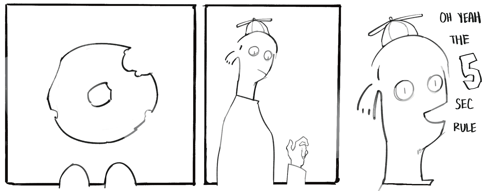
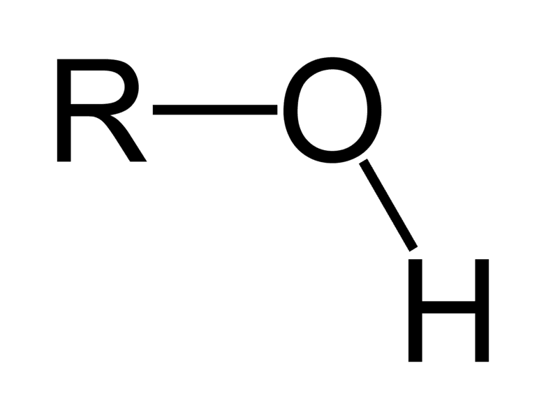

(This article assumes that the 5-second rule is built on the premise that bacteria takes time to travel, and therefore picking up fallen food within 5 seconds of its first contact with the floor is safe to eat)
I remember dropping the most delectable, tastiest donut imaginable on the cold floors of Texas streets when I was a kid. I was unbelievably inconsolable — until I remembered the 5-second rule.

Granted, Texas streets are a horrible place to drop your food. Who knows what’s been on those grounds? Definitely trash and imprints of shoes that have been everywhere. Animal feces, for sure. But in accordance to kid logic, the 5-second rule is invincible and legendary, forever a card to play to chase the microbes away.
Now that I have grown a bit in maturity, I have the competency to recognize that the 5-second rule is a complete myth. That donut I picked up from the streets of Texas some 𝑥 years ago? Yeah. Crawling with microbes. Not smart at all.
However, as I reminisce about childhood stupidity, a question pops into my mind. Some days ago, I stumbled on an article about titanium dioxide flooring. Titanium dioxide flooring is basically a bacteria-reducing floor functioning to repel microbes through photocatalysis processes (which uses light, often UV, to destroy microbes). So my question is, what if I hadn’t dropped my donut on the streets of Texas at all? What if I had dropped it on titanium dioxide floors instead? Would the 5-second rule work then?
Not really. The 5-second rule does not verily work, no matter the circumstances (unless you build me one that’s highly idealistic and unusual, that is. And even then, duration is not the major reason for its sterility), because it assumes that food picked up within 5-seconds is free of bacteria and safe to consume. Although duration may contribute to the quantity of microbes nesting on fallen food, any conclusion regarding the existence of microbial transfer on the donut is not primarily affiliated with the duration at which we pick up the food, but rather, other factors.
Knowing that, let’s rephrase the earlier question and expand the potential. How different would dropping a donut on Texas streets be in comparison to titanium dioxide floors?
First, let’s compare the physicochemical properties of the floors. In the following comparisons, I will weigh up the typical asphalt Texas sidewalks you see on populated streets and titanium dioxide-coated ceramic tiles. Assumptions will be made, but companionable trust turns these assumptions into supported statements.
In terms of surface textures, a typical Texas sidewalk has a rough surface filled with pores and cracks. This creates “gutters” on the sidewalk that can collect microbes. Essentially, they are prisons. In fact, these concrete prisons are extremely habitable and supportive of microbial life, as the pores shield microbes from fatal UV radiation, store water (Texas, a high-humidity city, must be a raving place for microbial club members), and the chemical composition of the concrete provide consumable energy for many microbes. So maybe less of a prison, and more of a gilded cage. For most foods, especially those stiff and dry, this means that the possible points of contact for microbial transfer are only at surface asperities, whereas conformable food may deform into the surface, sinking heavily into pores accumulated with microbes.
Titanium dioxide ceramic flooring, in comparison, appears relatively smooth and uniform. However, “smooth” is only a human-scale description: on a microscopic scale, even the smoothest surfaces are still a landscape of ridges and pores. These mini depressions are where bacteria can accumulate. Of course, compared to Texas sidewalks, the human-scale uniformity of the ceramic flooring means there are less steep slopes and valleys in the surface structure, resulting in less surface area where bacteria can live. The lesser dynamicity of surface topography also exposes bacteria, allowing more direct contact area for dwelling bacteria to transfer.
Next, we consider the hydropathy1. of the two surfaces. Texas streets contain asphalt, which is made of hydrocarbons whose weak intermolecular forces cannot form much other than oily (hydrophobic) substances. Dust and minerals gather on the street, which are generally hydrophilic when considering the mineral components of dust. Other organic residues such as food, paper, and oils promote hydropathy chaos, and these factors lead Texas streets to be chemically heterogenous. Therefore, when moisture-heavy foods fall onto the surface, the interactions may vary depending on the surplus substances present at the points of contact. Hydrophilic surfaces spread the water molecules into a thin film, where it promotes vast bacterial transfer. Hydrophobic qualities, on the other hand, cause water to bead, which minimizes contact.
Meanwhile, titanium dioxide itself is considered highly hydrophilic, especially when exposed to UV radiation. The UV light excites electrons, allowing more hydroxyl2. groups to form. These hydroxyl groups naturally form hydrogen bonds with water, therefore strongly attracting water molecules. However, when dust settles on the titanium dioxide flooring, it messes up the overall hydrophilicity of the surface, thereby erasing the predictability of the interactions. Think about pure chicken soup: superlative in its uniformity, with no chicken chunks or vegetable specks. And then you throw in a sprinkling of herbs. You have just successfully introduced heterogeneity: if a water droplet lands in the soup, no longer is the interaction between it and the soup the only surface considered, but the herbs will be taken into account as well. However, even if we take into account natural dust particles (which are mostly hydrophobic), the hydrophilic quality of the surface largely outshines.
Finally, let's consider the chemical activity of each surface. The asphalt Texas streets are governed by bitumen⁴ and oxidative aging. Asphalt is an oil-based substance, making it naturally hydrophobic. However, it is also naturally lipophilic, meaning it attracts lipids such as fat. Oxidative cracking of the street also creates mini canyons that trap microbes. The contact force of competent food can create pressure that squeezes loosely-attached microbes out.
Titanium-dioxide tiles, on the other hand, have photocatalytic oxidation. When exposed to UV light, energy is absorbed. This intense energy kicks out electrons from their configurations, leaving holes that react with surrounding moisture and oxygen to create aggressive hydroxyl radicals. These tiny murderous radicals then attack any landing microbes, probing microbial violence and destroying the bacterial pests.
Knowing these, let’s describe what might happen if a donut were to drop on these two types of surfaces.
Consider that a regular chocolate glazed Tim Hortons donut with a big, fat bite on the side was dropped onto the Texas streets. Chocolate-sided face first. Not very ideal.
Firstly, let’s frame the immediate contact with the asperities of the surface and look at a lot of adhesive forces. The chocolate glaze is a terrifying combination of moisture, stickiness, and chocolatey lipids that are great at sucking up bacteria. The moisture swiftly forms liquid bridges between asphalt and donut, the stickiness of the glaze mechanically dislodges microbes, and the chocolate fats and oily residues on the sidewalk are chemically adhesive.
This is a recipe for microbes. The inconsistent hydrophobicity of the sidewalk still retains some form of dignity, but even it cannot halt the liquid bridging, stickiness, and lipophilic qualities of the glaze. It can only limit the bacterial spread.
At the same time, a battle of attrition is fought between cohesive (within the glaze) and adhesive (to the ground) forces. Prior, we had only explored the glaze’s adhesive properties to the ground, leading undeniably to bits of chocolate glaze left behind. Don’t fret, though. Cohesion still has a winning chance. The cohesiveness of the chocolate glaze depends on its properties: thick and sticky? Good. Thin and runny? Pretty bad. But as a professional Tim Hortons donut taster, I would say the chocolate glaze is rather viscous, so for once cohesion trumps.
And then, approximately 3 seconds after the Great Plunge of the Lonesome Donut, you pick it up with your grubby hands and continue nibbling as you were before.
The conclusion is that although the adhesive forces (capillary and surface interactions) may pick up much of the microbes on the surface, it also traps the chocolate glaze. Some of it will leak into cracks, and the glaze’s cohesion cannot overcome the competing adhesive forces pulling it towards the floor. This results in a partial loss of glaze, as well as the microbes gathered. You still pick up a rather microbially infested donut, though. Think of sticky tape: when you peel it off, the majority of it comes off, but there are remnants of it on whatever surface you taped it to. That’s what happens with the donut. Convenient?
Moving on, the chocolate glazed Tim Hortons donut was suddenly teleported to approximately 4 feet above a titanium dioxide-coated ceramic floor. Woe is donut, it unfortunately has no flying properties and plummets face-down onto the floor. What happens?
Once again, let’s consider the surface texture and the adhesive forces. At first contact, microbial transfer can still occur immediately. Ceramic tiles are smooth at first glance, but we established that there are still tiny microscopic irregularities that can hide bacteria. The moisture from the glaze, once again, builds liquid bridges that transfer these bacteria. Surface forces caused by stickiness and lipids continue acting as microbial police, hoarding them onto the donut.
But what about the hydrophilicity of the surface? Let’s say this is a rather sunny spot. Titanium dioxide, as established prior, is a rather hydrophilic surface underneath UV light. This increases the contact area and can promote microbial transfer.
The battle fought between cohesion and adhesion is considerably less intense as before, as there exists no profound lipophilicity or mechanical interlocking, leaving cohesion the clearer winner. That means that when you pick up the dropped donut, most of the chocolate glaze is still intact on the donut, and very little chocolate residue is left on the flooring.
Another key factor is photocatalysis, or otherwise, the self-cleaning element. Although the photocatalytic activity is not in substantial effect until a period of time has gone, the possibilities vary. There is a great chance that before the donut had hit the floor, if the floors before were not sterile and had ongoing UV exposure, a multitude of bacteria were wiped out due to bloodlusted hydroxyl radicals. This means there are less microbes available for transfer.
And again, the donut is then picked up after three seconds.
To summarize, adhesive forces still enable microbial transfer, but without roughness and chemical affinity, they are less effective than on asphalt. But the surface hydrophilicity and capillary forces are more than enough to efficiently transfer plenty of bacteria onto the donut. However, the smoother titanium dioxide-coated surface provides less purchase for the chocolate glaze to stick. Therefore, cohesion dominates, and less of it is left on the floor, meaning most of the bacteria transferred still resides on the original skin of the donut. And though photocatalytic activity is present, its past activity is far more significant than the present.
Now that we know how microbial transfer can happen and the certain factors that affect its efficiency, it is important to understand the role of duration in this. How exactly does the time it takes for the donut to be picked up affect the microbial housing population on the donut? The answer: colloquially, time is a benefactor to adhesion.
So in some way, the 5-second rule is right. Yep, a slight contradiction to the earlier stance. But don’t be mad: the 5-second rule isn’t completely right.
Let’s start from why the 5-second rule doesn’t work.It’s because microbes don’t take their sweet, long time to transfer onto your fallen nutriment. It can occur immediately at the moment of contact. Direct contact is what promotes the transfer of bacteria, as physical contact and pressure dislodges loosely-attatched bacteria and microbes are hence picked up by food. Adhesion forces (electrostatic forces, Van der Waals forces, and hydrophobic interactions) keep the bacteria stuck upon contact, pulling and holding bacteria in place the instant the surfaces touch. Essentially, contamination is determined at the moment of contact, and not the duration of contact.
However, microbial transfer is not always guaranteed. It depends heavily on conditions. Let’s say there’s no bacteria at all on the ground. That the fallen food is dry, to the point that there is little to no moisture on its surface. Or that the bacteria are strongly attached to their own surface, as a result of strong biofilm and adhesive structure force (microscopic tools of a microbe that help them stick such as flagella). What happens then?
Nothing. The microbes do not stick. Therefore, no microbial transfer onto your food. In these exceptional circumstances, you can say that the 5-second rule may sort of work, but the lack of contamination is caused not by the duration of contact, but by physicochemical properties of surfaces and the nature of molecular attraction.
The important point to contemplate is the role of duration in all of this. The longer the duration the food spends on the floor, the greater the diffusion and increases contact area, which can push the glaze further into the asphalt. Adhesion strengthens over duration as enough time is given for forces to stabilize and develop. Liquid bridging expands, facilitating more possible spread and transfer pathways. All of this acclimates to increased cross-contamination.
So yes. Time is undeniably an enabler for microbial transfer. But it is no more than an amplifier: the real deal lies in the other discussed factors.
If you wish to drop your Tim Hortons donut on the floor and pick it up free of microbes, you should perhaps invest in changing a different factor.
1 Basically, a big word describing the way surfaces coddle water molecules. Like, how substances interact with water mainly in terms of attraction and repulsion. ↩
hover for pic!

1 Refers to a specific chemical group composed of one hydrogen and one oxygen atom. ↩